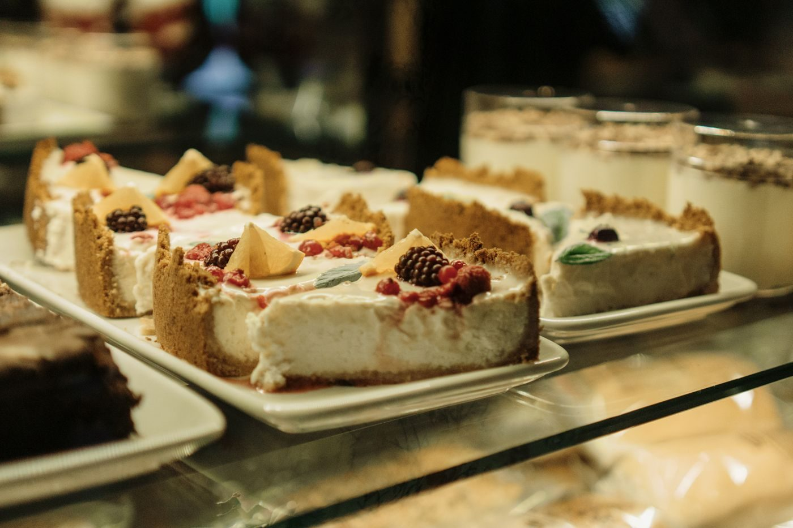

The Moon Bakeshop
Family-owned bakery and cafe in downtown Huntsville since 2019.

About
The Moon Bakeshop is a family-owned bakery and cafe in downtown Huntsville, open since 2019. The shop bakes small-batch pastries from scratch, with a signature cruffin, croissants, scones, custom cakes, breakfast sandwiches on housemade focaccia, and an espresso bar with housemade syrups.
Services
Signature cruffin
The shop's signature croissant and muffin hybrid.
Croissants
Scones
Custom cakes
Custom cakes made to order.
Breakfast sandwiches
Breakfast sandwiches on housemade focaccia.
Espresso bar
Espresso drinks with housemade syrups.
Gallery


All gallery photos are stock photos, labeled as such. They show the kind of work and setting described on this page, not this business.
Visit
Contact
Call +1 256-270-8435 Email moonbakeshop@gmail.com
The Moon Bakeshop serves Huntsville, AL. Questions? Call +1 256-270-8435.